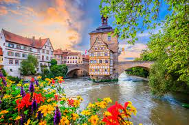
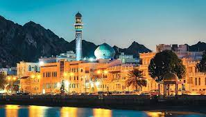

Favorite Travel Destinations
These are some of my favorite travel destinations.
- Bamberg 
- Maldives
- Muscat 
Bamberg is a town in northern Bavaria, Germany, laid out over 7 hills where the Regnitz and Main rivers meet. Its old town preserves structures from the 11th to 19th centuries including the muraled Altes Rathaus (town hall), which occupies an island in the Regnitz reached by arched bridges.

The Maldives, officially the Republic of Maldives, is an archipelagic state and country in South Asia, situated in the Indian Ocean. It lies southwest of Sri Lanka and India, about 750 kilometres from the Asian continent's mainland.
Muscat, Oman’s port capital, sits on the Gulf of Oman surrounded by mountains and desert. With history dating back to antiquity, it mixes high-rises and upscale shopping malls with clifftop landmarks such as the 16th-century Portuguese forts, Al Jalali and Mirani, looming over Muscat Harbor. Its modern, marble-clad Sultan Qaboos Grand Mosque, with 50m dome and prodigious Persian carpet, can accommodate 20,000 people.